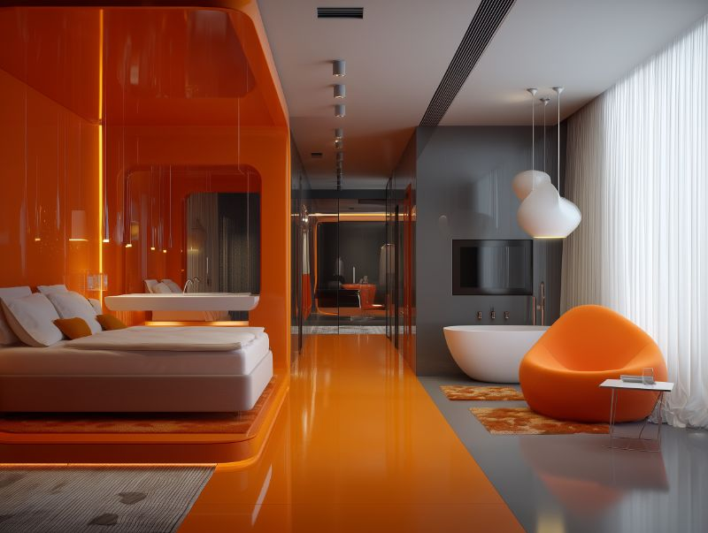

Acomodações


Onde o deserto encontra o conforto

Suíte Duna
Vistas panorâmicas do deserto através de janelas do piso ao teto, terraço privativo com daybed e mobiliário artesanal
A partir de €480 / noite
Suíte Oásis
Piscina privativa com vista para as dunas, acesso ao pátio-jardim exuberante e ducha externa de chuva
A partir de €720 / noite
Suíte Riad
Convivência tradicional em pátio interno, terraço panorâmico de 360° e banheiro estilo hammam
A partir de €560 / noite